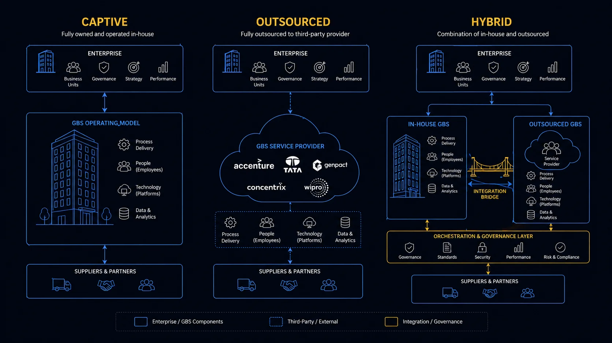

GBS Operating Models How the industry is structured — and where you fit.
You got the job offer. Now understand what kind of organization you just joined — and what it means for how you work, grow, and get evaluated.
Sound familiar?
 RYou call it SSC, GBS, CoE — and could not explain the difference.T1 →
RYou call it SSC, GBS, CoE — and could not explain the difference.T1 →
 AYour badge says one company. Your orders come from another.T2 →
AYour badge says one company. Your orders come from another.T2 →
 PYou escalated a real problem and nobody seems to own it.T3 →
PYou escalated a real problem and nobody seems to own it.T3 →
 KA recruiter pinged you. You cannot tell if the move is up.T4 →
KA recruiter pinged you. You cannot tell if the move is up.T4 →
 RYou work hard but do not know which skills your center rewards.T5 →
RYou work hard but do not know which skills your center rewards.T5 →
SSCShared Services Center — inhouse unit delivering standardized, transactional services to multiple business units, GBSGlobal Business Services — evolved SSC; multi-function, strategic delivery model at scale, and CoECenter of Excellence — specialist inhouse unit for complex, judgment-intensive processes like Tax, Treasury, and Audit — what is the actual difference?
SSC, GBS, and CoE are three different purposes — volume, scale with insight, judgment. Knowing which one you sit in explains how you are measured. Read how to solve this in the section below!
Three names for your workplace.
You can define none of them.
RMonthly operations call. 14 people on the line.
Ravi gives his update: "Our SSC processed the full volume on time."
A director cuts in.
"We are not an SSC. We are GBS. There is a difference."
Silence. Ravi mutes himself.
Eight months in the building — and he cannot say what kind of building it is. He feels exposed.
You describe your workplace with a word you cannot define. Your development plan is built on that word.
The three terms name three different purposes — not three sizes of the same thing.
On the next call, Ravi says "our GBS" — and understands why his scorecard tracks more than volume. Small word. Different game.
SSC, GBS, and CoE in depth — definitions, CoE scope, diagram
Three terms. Used interchangeably. None of them mean the same thing.
Standardized, high-volume delivery
Consolidates repetitive, rule-based transactions across business units.
- High volume, low variance
- Typical scope: invoice processing, payroll, data entry, employee admin
- Efficiency through consolidation — one team instead of ten
Multi-function, strategic delivery
Evolved SSC. Adds cross-functional scope, business partnering, and data-driven insight.
- Runs the transaction — and analyzes what it means
- Serves as a strategic partner, not just a cost center
- Governs multiple functions under one operating model
Deep expertise, judgment-based
Built around specialized knowledge that cannot be standardized or easily transferred.
- Not built for volume — built for judgment and decisional authority
- Longer knowledge transfer time by design
- Almost always kept inhouse — the knowledge is the asset
- Tax — jurisdiction complexity, regulatory interpretation, cannot be fully standardized
- Treasury — cash management, hedging strategy, counterparty risk — requires discretional authority
- Internal Audit and Controls — independence from operations is structural, not optional
- Regulatory Compliance — evolving rulebooks require specialists, not processors
- FP&AFinancial Planning and Analysis — budgeting, forecasting, variance analysis, and strategic business performance reporting — business partnering, forecasting, decision support
- Legal Entity Control — statutory reporting, intercompany, transfer pricing
Pull up your center’s service scope. Decide which of the three models it matches. Ask your team lead if you got it right.
Named the model? The next question is who actually delivers the work. That answer decides who signs your paycheck.
Captive, BPOBusiness Process Outsourcing — third-party delivery of business processes on behalf of a client. You work for the BPO; the client evaluates you., and Hybrid — who actually delivers the work?
The delivery model — captive, BPO, or hybrid — decides who employs you, who evaluates you, and how you move. Read how to solve this in the section below!
Your badge says one company.
Your day belongs to another.
AAmara’s badge says the provider’s name.
Her inbox says the client’s.
9:40 AM — client escalation: "We need this resolved today."
11:00 AM — her BPO manager stops by.
"Watch the handling time on that account. The margin matters."
Same ticket. Two answers.
She is torn between the boss she sees every day and the one who signs off her rating.
You optimize for the boss you see — and get evaluated by the one you don’t.
The delivery model decides who employs you, who evaluates you, and how you move.
Amara names her side of the model — and starts managing both audiences on purpose instead of by accident.
Captive, BPO, and hybrid in depth — structures, trade-offs, diagrams
The model type tells you what gets done. The delivery model tells you who does it — and who signs your paycheck.
Inhouse / Owned
The organization owns and operates the center. You work directly for the company whose processes you support. One reporting line.
- Strong institutional knowledge retention
- Higher setup cost — lower long-term cost
- Slower to scale
- Broader career mobility across functions
Outsourced
A third-party provider (Accenture, Genpact, Infosys, Capgemini) runs the center on behalf of a client. You work for the BPOBusiness Process Outsourcing — third-party delivery of business processes. You are employed by the BPO, not the client. — the client sets your daily reality.
- Two bosses in practice: BPO manager + client
- Fast to scale — pre-trained resources available
- Typically higher long-term cost (service premium)
- Stricter performance evaluation culture
Mixed Model
Captive center for critical or complex scope. BPO for volume, language coverage, or regional flexibility. Now the industry default.
- 58% of organizations operate this way (SSON, 2025)
- Best balance of control and scale
- Coordination overhead between teams
- Your experience depends on which side you sit on
Captive — owned and operated inhouse
Outsourced — BPO delivers the work
Hybrid — inhouse core + outsourced scale
- Keep inhouse what is close to the business — processes requiring proximity to the business, unique institutional knowledge, language capability, low transaction volume, or significant judgment. These are not built for scale. They are built for depth and accuracy.
- BPOs are genuinely strong at what they are designed for — large transactional volumes where scale and operational discipline drive efficiency. Outsourcing partners are good at running well-defined, repetitive processes consistently. That is not a limitation — that is the value proposition.
- Where the model creates friction — poorly defined processes, excessive handoffs, weak upstream discipline, and work requiring frequent back-and-forth between inhouse and outsourced teams. Clean boundaries are a prerequisite, not an afterthought.
- One principle that applies to every model — a broken process delivered at scale produces bad outcomes at scale. This applies equally to inhouse centers. The business expecting transformation from a center that has not been given the mandate or the tools will be disappointed.
Write two names down: who employs you, and who actually evaluates your work. If they differ, manage both on purpose.
Delivery answered. But some functions sit in the hub without belonging to it. Meet the landlord.

Captive, Outsourced, and Hybrid — three delivery models compared
The landlord modelLandlord model — GBS provides the hub, infrastructure, and enabling services while business units retain full ownership of people, processes, and delivery risk — when GBS hosts but does not own
In the landlord model, GBS owns the building and functions own the process. Route your asks to the tenant, not the landlord. Read how to solve this in the section below!
Your ask bounced for weeks.
Nobody owns it.
PPeter needs one extra analyst. He asks hub leadership.
"Headcount for your function is not ours. Ask the function."
He asks the function.
"That sounds like a site topic. Ask your hub."
Three weeks. Four emails. Zero owners.
His request is not rejected — it just circles. He is stuck between two owners who each point at the other.
You escalate to the landlord when your problem belongs to the tenant.
In the landlord model, GBS provides the building. The functions living in it own the work.
Peter re-routes the ask to the function owner, with the site’s cost data attached. An answer lands within days — and it is a real one.
The landlord model in depth — full structure and diagrams
Same building. Same badge on the door. Different boss. Thousands of people work inside a landlord model without knowing it has a name.
Captive, BPO, and Hybrid answer one question: who delivers the work. The landlord model answers a different one: who owns it.
- → GBS runs the hub — the building, infrastructure, local HR and recruiting support, admin services, metrics reporting, and often shared capabilities like CI and change management
- → The teams inside that hub do not report to GBS — they report solid-line into their business function
- → The function keeps the budget, the process decisions, and the delivery risk
- → GBS is the landlord. The functions are tenants.
Industry analysts describe three governance constructs for multi-functional GBS organizations:
- → Landlord model — the lightest: GBS acts as common host and enabling umbrella over functionally aligned teams
- → Joint platform model — shares ownership between GBS and the functions
- → Service company model — puts GBS on par with the business units, running its own P&L and selling services internally
- → Most real organizations sit somewhere between these — many run a landlord arrangement for some functions while fully owning others
The platform
Everything a function needs to operate in the hub without building it themselves.
- Facilities, workspace, and infrastructure
- Local HR, recruiting, and onboarding support
- Admin services and metrics reporting
- Shared capabilities — CI, change management, program support
The work
Ownership stays with the business unit — including the risk when delivery fails.
- Solid-line reporting — teams answer to the function, not GBS
- Budget, headcount, and strategy decisions
- Process design and service management
- Delivery risk and performance accountability
Landlord — GBS provides the platform, functions keep ownership
Why would anyone choose this? Because it is the fastest, lowest-risk way to bring a function into a hub.
- → The tenant function handles its own restructuring, process documentation, and knowledge capture — GBS just has to be a good host
- → Existing hub capacity and embedded capabilities get used instead of duplicated
- → It builds trust — a function that has been a satisfied tenant for two years is far more open to handing over full delivery later
- → Well-run arrangements define that evolution upfront — success criteria and gates that trigger conversion to full GBS ownership, similar to a build-operate-transfer setup
- → Some organizations choose it deliberately and stay there — Experian's GBS has publicly described running a landlord-style model to keep accountability with the business while maintaining flexibility
Now the honest part. The landlord model is widely considered the least mature of the three governance constructs, and it carries a structural weakness.
- → When the functions keep budgets, strategy, and service management, GBS has very little authority to standardize, drive end-to-end ownership, or prove its value beyond the facilities invoice
- → Landlord-only GBS organizations struggle to build a brand inside their own company — and are the most vulnerable to sliding back into functional silos when leadership changes or budgets tighten
- → The industry debate is genuinely unsettled: some practitioners treat landlording as a failure state; others argue it is a pragmatic, legitimate part of a hybrid ownership model — as long as everyone is honest about what it is and where it is heading
- Know which line is solid — you can sit in a GBS hub, carry a GBS badge, and still not work for GBS. In a landlord setup your performance rating, budget, and promotion path run through your function. Figure out who actually owns your process in your first weeks. That answer tells you who decides your career.
- Watch which direction the model is moving — landlord arrangements are rarely static. A tenant converting to full GBS ownership creates roles: transition leads, service management, governance, process ownership. A model sliding back toward functional silos eliminates them. Reading this direction early is a career advantage most people in the hub never use.
- Do not confuse the hub with the model — two people at neighboring desks can work under completely different operating models. One reports into GBS with GBS career paths; the other is a tenant employee whose real organization sits three time zones away. Same floor, different worlds. This explains a lot of the inconsistency new joiners notice and cannot name.
- For GBS leaders, landlording is a starting position, not a strategy — hosting well earns the right to a bigger conversation. The organizations that make it work define conversion gates upfront. The ones that drift stay landlords until someone asks why GBS exists at all.
Write two names: who owns your process, and who owns your desk. Route your next ask to the right one.
Three models, two delivery setups, one landlord. Time to compare them side by side.
How the models compare
The models differ on four dimensions: scope, evaluation, mobility, depth. Read any role — including your next offer — through that lens. Read how to solve this in the section below!
A better title.
Maybe a slower career.
KA recruiter message on Tuesday. A CoE role. Better title.
Klaudia sits in an SSC, year 3.
She reads the posting twice.
"Is this a step up — or a step sideways with nicer words?"
She has no way to tell. She feels stuck between a real signal and a shiny one.
A better title in the wrong model can be a slower career.
Compare models on four dimensions, and any role — including an offer — becomes readable.
Klaudia scores the CoE role on all four lines. The move is real — narrower scope, deeper currency — and now she chooses it with open eyes.
The full model comparison matrix
A directional guide — not a rulebook. Every organization runs this differently.
Green = advantage · Amber = neutral or variable · Red = watch-out · All ratings are directional. Your organization may differ significantly.
Place your current role on the four dimensions — one line each. Keep it. It is your baseline for every future offer.
The comparison shows one more thing: which skills each model pays for. That is your next hour, decided.
What this means for your career
Each model rewards a different skill currency. Name your model, then build the skill it pays for. Read how to solve this in the section below!
Your center pays for one skill.
Do you know which?
 R
RRavi drafts his development plan. A generic list: Excel, communication, "leadership."
He stops.
His center is GBS — the scorecard tracks insight, not only volume.
"So the skill that gets rewarded here is analysis. Not faster typing."
He rewrites the plan around that one line. For the first time it feels like his — and he feels confident presenting it.
You plan your career for the company you imagine, not the model you work in.
Each model pays a different skill currency.
Ravi’s next review opens with the skills his model actually rewards. The plan finally points somewhere.
Career implications in depth — per model
Directional takeaways based on where you work. Every organization is different — use this as orientation, not a prescription.
- Your organization placed you there because these processes are close to the business — build deep process understanding early
- Visibility is your responsibility — inhouse environments reward those who make their work seen
- If you are in a nearshore location, your language skills are a strategic asset — that is why your location was chosen
- Career progression can be slower — but cross-function moves are more accessible
- Client relationship skills matter as much as technical skills — often more
- A strong client relationship directly affects your performance ratings
- Work can be transactional and fragmented — actively seek exposure beyond your lane
- You may feel less integrated into the client organization — that distance is structural, not personal
- Performance evaluation tends to be strict — understand how you are being measured, early
- Find process improvements — it is one of the clearest ways to get recognized
- Build domain expertise fast — the organization expects high standards from day one
- Your decisions carry real weight — processes here require judgment, not just execution
- Knowledge transfer takes longer here by design — patience is part of the job
- The inhouse preference is deliberate — your expertise is the asset the organization is protecting
Complete one sentence: "My center is X, so the skill it pays for is Y." Build your next learning hour around Y.
You know the model. Next: how the center proves its value — and how you prove yours. Cluster 2: Value Creation.
The first few months in GBS move fast — the workload is real, the learning curve is steep, and nobody hands you a step-by-step career manual. That's normal.
- → Entry-level compensation follows structured bands — bonuses often kick in after six months, and salary growth ties to company performance as much as individual results
- → The career path exists — it's usually on a slide somewhere — but the how to get there is what separates people who progress from those who wait
- → Start by understanding where your strengths are, where your gaps are relative to peers, and what the next role actually requires
- → Career management is a skill — the earlier you build it, the further ahead you'll be
Key terms in this cluster
Every underlined term in this page links here. A full cross-pillar glossary is available in the GBS Insider Club Field Guide.
An operating model has more layers than SSC vs BPO. This cluster covers the first three:
- ✓ Delivery structure — SSC, GBS, CoE distinctions
- ✓ Sourcing model — Captive, BPO, Hybrid
- ✓ Ownership model — the landlord construct: who hosts vs who owns
- → Governance and decision rights — covered in Cluster 3
- → Service scope and contract design — covered in Cluster 4
Want the full breakdown on video?
GBS operating models covered in depth on the GBS Insider Club YouTube channel — with real examples, frameworks, and career implications.
▶ Subscribe on YouTubeKnowing the frameworks is the entry ticket. Applying them — visibly, at your actual job — is what gets you promoted.
The GBS Insider Club Career Playbooks turn this theory into a guided 90-day program for your role: self-assessment, practical exercises, templates, and Julian's unfiltered practitioner playbook.
Explore the Career Playbooks → Back to GBS Fundamentals